Porta da base · v2.0 · sobe até o teto da parede
- Pedido do dono (print da base): a porta dupla da parede de baixo ficava baixa, com a folha só na faixa da face (24 px) e o chão aparecendo por cima dela. Agora a porta da parede de baixo é uma fachada alta de 56 px: a tampa fica na mesma linha do topo das paredes vizinhas (y − 24) e o pé na mesma linha do pé da face (y + 32).
- Visual novo, na linguagem da referência (só o estilo, o desenho é nosso): batente de metal escuro com rebites, caixa do mecanismo em cima com a luzinha (vermelha fechada, âmbar abrindo, verde aberta), folha bege com contorno laranja, faixas de alerta pretas e laranja em cima e embaixo, janelinha ciano com reflexo e a faixa laranja no meio, maçaneta perto da borda que corre e a soleira com grade.
- Mesmo contrato: os 8 arquivos com os mesmos nomes, mesmo tamanho (32×56 por quadro), mesma âncora (x, y − 24), 4 quadros, variante B (folha na borda de fora), solo corre pra oeste/norte, dupla abre do meio com a emenda em degrau. Colisão não muda.
- Ícones do construtor (
icon_base_door,icon_base_door_double) refeitos na linguagem nova (opcional: se preferir, ficam os de hoje).
O print do dono · antes × depois
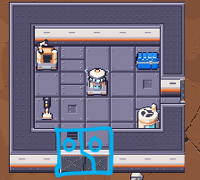
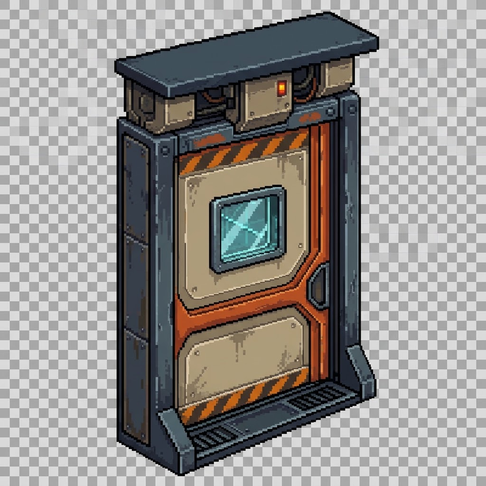
A mesma base, montada só com os sprites na ordem do jogo · Árido · player chegando de fora. Fecha → abre (~12 fps) → fica aberta → fecha. Recorte 480×270 mostrado a 2×.
Do lado de fora a porta agora tem a altura da parede inteira (topo + face). Aberta, o vão é transparente acima da linha do tile, então aparece o chão de dentro da base, como numa porta de verdade.
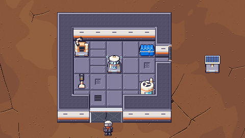
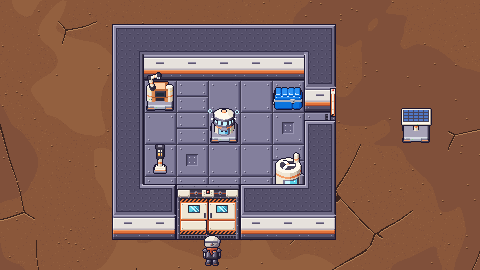
Player dentro da base, atrás da porta de baixo
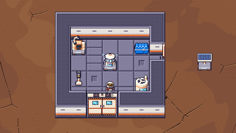
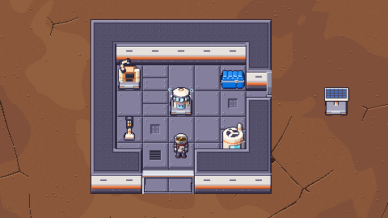
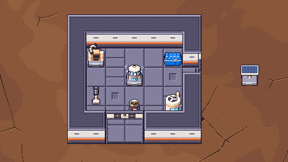
As 8 combinações em cena
T1: solo em cima (h_n), dupla à esquerda (v_w), solo à direita
(v_e), dupla embaixo (h_s).
T2: dupla em cima (h_n), solo à esquerda (v_w), dupla à direita
(v_e), solo embaixo (h_s).
- Parede de baixo (
h_s): fachada alta (o pedido). Tampa 0–4, caixa do mecanismo 5–12, viga 13, vão 14–50, soleira com grade 51–55 (linhas do sprite de 56). As listras de baixo caem na mesma altura da faixa laranja da face da parede vizinha. - Parede de cima (
h_n): a folha fica na borda de fora (norte), lá no fundo do tile, então a fachada vai do topo da parede (linha 0, alinhada com o topo das vizinhas) até o pé da folha (linha 27): tampa, caixa, viga e uma folha mais baixa (é a mesma porta vista de longe). Na frente, a grade da soleira no chão. - Paredes laterais (
v_e/v_w): a câmera vê de lado, então aparece o topo: os batentes sobem até o topo da parede, a caixa do mecanismo com a luz fica em cima do batente pra onde a folha corre (nos dois, na dupla), a folha bege com contorno laranja fica 2 px abaixo e a ponta que corre tem a faixa de alerta. A frente do batente de baixo mostra o metal com rebites, e a grade da soleira fica no chão, do lado de dentro.
Nos 4 estágios (T1, fechada e aberta)
Tempestade
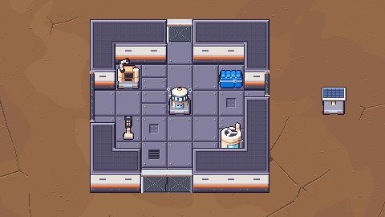
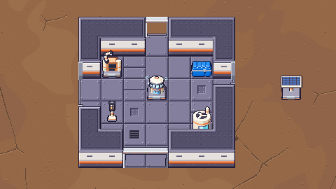
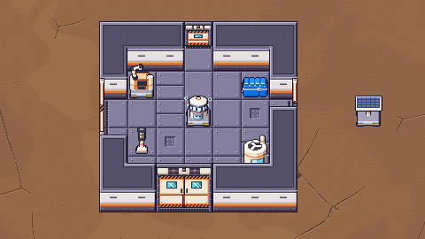
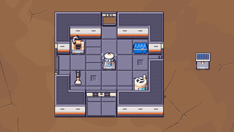
Árido
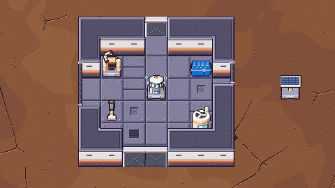
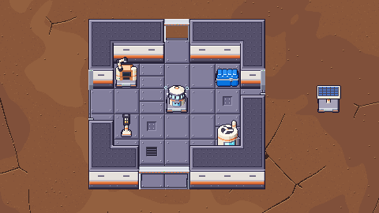
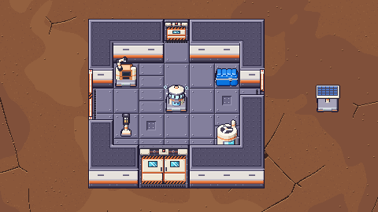
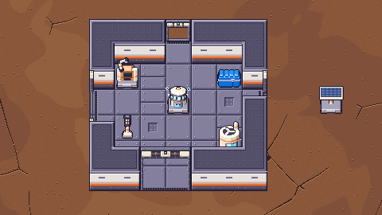
Névoa
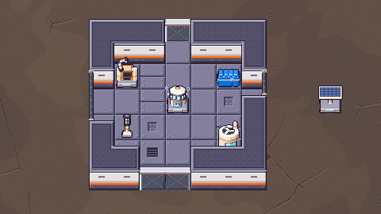
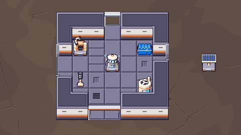
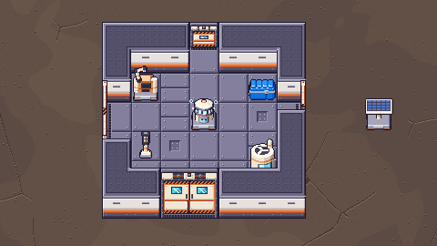
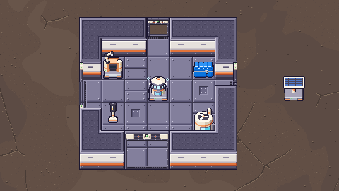
Verde
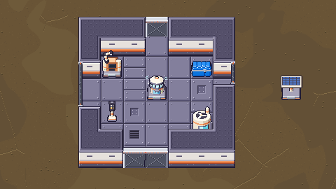
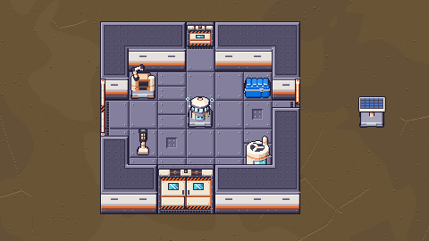
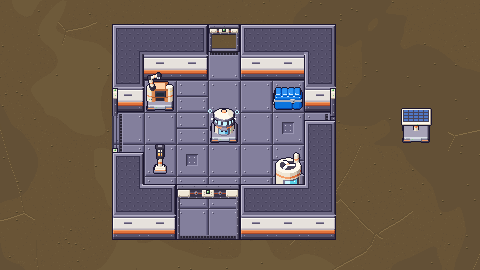
A porta é coisa construída, então não muda de cor com o estágio (como o chão e a parede da base). O bege com contorno laranja e o batente escuro leem bem no vermelho, no cinza da névoa e no verde.
Os sprites · 6× animados
Fecha (0) → abre (1, 2) → aberta (3) → fecha, como no jogo. A dupla mostra as duas metades lado a lado (h) ou uma em cima da outra (v), cada uma é um sprite de 32×56 no tile dela.
Solo
Dupla
Tiras · antes × depois (quadros 0 → 3)
base_door_h_n.png · 128×56
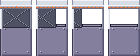
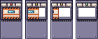
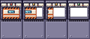
base_door_h_s.png · 128×56
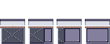
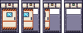
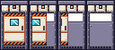
base_door_v_w.png · 128×56
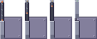
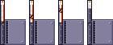
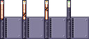
base_door_v_e.png · 128×56
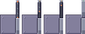
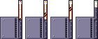
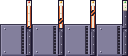
base_door2_h_n.png · 256×56
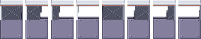
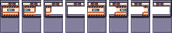
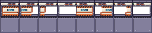
base_door2_h_s.png · 256×56
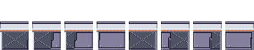
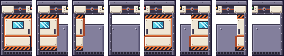
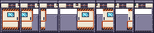
base_door2_v_w.png · 256×56
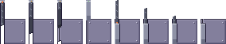
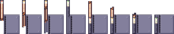
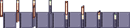
base_door2_v_e.png · 256×56
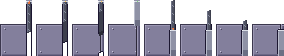
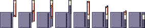
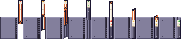
A dupla montada · 4 quadros · 4×
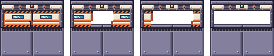
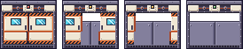
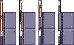
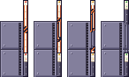
Ícones do construtor · antes × depois
O que veio da referência
Só o estilo, nada copiado: a ideia do batente grosso escuro com rebites (aqui 4 px, porque a colisão
aberta só deixa 2 px de jamba e o vão tem que continuar largo), a caixa do mecanismo em cima com blocos bege,
pistão laranja e a luz no meio, a folha bege com contorno laranja, as listras de alerta em cima e
embaixo, a janelinha ciano com reflexo em diagonal, a maçaneta perto da borda e a grade na
soleira. Tudo no contorno #1b1630, laranja #e2733a das máquinas, bege e metal das
paletas que a base já usa. A ferrugem/sujeira da referência ficou de fora: a base é nova e limpa como as máquinas.
Pro Dev integrar
- Nada muda no código. Copiar os 8 PNGs de
reports/design/v05_m3_porta/pendentes/praassets/sprites/(e os 2 ícones, se o dono aprovar os novos). Mesmos nomes, mesmo tamanho (solo 128×56, dupla 256×56, ícones 16×16), mesma âncora (quadro de 32×56 em(x, y − 24)), mesma tira (dupla: metade 1 nos quadros 0–3, metade 2 nos 4–7), mesma ordem de desenho (ay = ty·32 + 1, com as paredes da linha) e a mesma regra de borda (variante B,BaseGrid.layout). - Colisão: igual (tabela da v1.2 em
BaseGrid.door_rects). O desenho respeita: fechada, a folha cobre a faixa da colisão; aberta, só os batentes ficam (4 px no desenho, 2 px na colisão: o player pode encostar 1–2 px no batente, como já acontecia com a parede). - Raio-x: a regra de hoje vale (quadros 0–1 contam). Diferença visual: a porta de baixo (
h_s) agora cobre o tile de cima até y − 24 como o topo da parede já cobre; com a porta aberta (quadros 2–3) o vão é transparente, então o player aparece por ele; só a caixa do mecanismo (linhas 0–13) cobre a cabeça dele por um instante enquanto ele passa. Se o dono quiser, dá pra contar oh_sno raio-x também nos quadros 2–3, mas não acho necessário. - Chão: como hoje, o tile da porta não desenha
base_floor: o sprite traz o chão do tile (linhas 24–55). Nah_saberta, as linhas 14–23 do vão são transparentes (aparece o chão de verdade do tile de cima). - Fantasma do construtor: continua pegando o quadro 0 de
h_s/v_e; agora ele é mais alto (a fachada inteira), sem mudar nada no código. - Luz: está pintada no sprite (vermelha no 0, âmbar no 1–2, verde no 3); nada a fazer.
Checagem de tamanhos
| arquivo | no jogo hoje | pendente | alpha | |
|---|---|---|---|---|
base_door_h_n.png | 128×56 | 128×56 | [0, 255] | ok |
base_door_h_s.png | 128×56 | 128×56 | [0, 255] | ok |
base_door_v_w.png | 128×56 | 128×56 | [0, 255] | ok |
base_door_v_e.png | 128×56 | 128×56 | [0, 255] | ok |
base_door2_h_n.png | 256×56 | 256×56 | [0, 255] | ok |
base_door2_h_s.png | 256×56 | 256×56 | [0, 255] | ok |
base_door2_v_w.png | 256×56 | 256×56 | [0, 255] | ok |
base_door2_v_e.png | 256×56 | 256×56 | [0, 255] | ok |
icon_base_door.png | 16×16 | 16×16 | [0, 255] | ok |
icon_base_door_double.png | 16×16 | 16×16 | [255] | ok |
Extras em pendentes/: nenhum.
Gerado por python3 tools/sprites/v05_m3_porta.py (chama o
v05_m3_porta_report.py). Determinístico. Sprites de hoje copiados em before/.